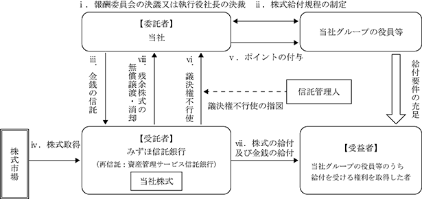
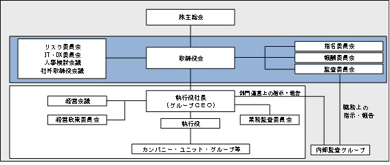
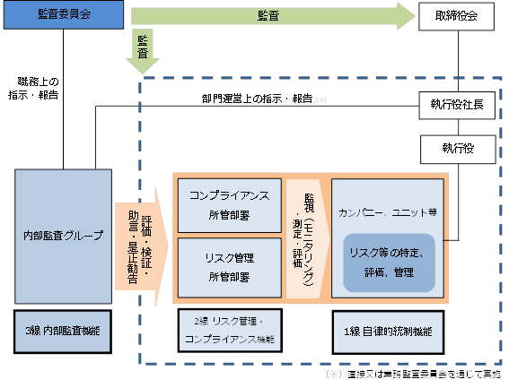
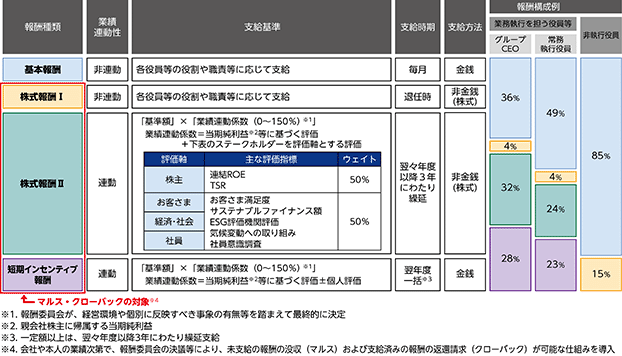
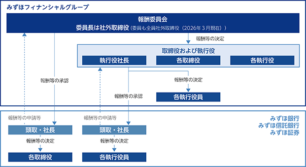
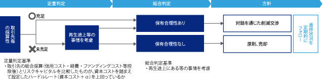

(注) １．第一回から第四回までの第十四種の優先株式の発行可能種類株式総数は併せて90,000,000株を超えないものとする。
２．第一回から第四回までの第十五種の優先株式の発行可能種類株式総数は併せて90,000,000株を超えないものとする。
３．第一回から第四回までの第十六種の優先株式の発行可能種類株式総数は併せて150,000,000株を超えないものとする。
(注) １．2025年11月14日および2026年２月２日開催の取締役会決議により、2026年４月22日付で自己株式の消却を実施いたしました。これに伴い発行済株式総数が47,016,600株減少しております。
２．米国預託証券(ＡＤＲ)をニューヨーク証券取引所に上場しております。
会社法に基づき発行した新株予約権は、次の通りとなります。
なお、2020年６月25日開催の第18期定時株主総会の決議により、2020年10月１日付で株式併合(普通株式10株につき１株)を実施いたしました。これにより、「新株予約権の目的となる株式の数」および「新株予約権の行使により株式を発行する場合の株式の発行価格および資本組入額」について、株式併合の内容を反映しております。
(注) １．普通株式の内容は、「１ 株式等の状況 (1) 株式の総数等 ② 発行済株式」に記載されております。
２．以下の①、②、③、④又は⑤の議案につき当社株主総会で承認された場合(株主総会決議が不要の場合は、当社の取締役会決議又は会社法第416条第４項の規定に従い委任された執行役の決定がなされた場合)、当社取締役会又は当社取締役会の委任を受けた当社の代表取締役が別途定める日に、当社は無償で本新株予約権を取得することができる。
① 当社が消滅会社となる合併契約承認の議案
② 当社が分割会社となる分割契約もしくは分割計画承認の議案
③ 当社が完全子会社となる株式交換契約もしくは株式移転計画承認の議案
④ 当社の発行する全部の株式の内容として譲渡による当該株式の取得について当社の承認を要することについての定めを設ける定款の変更承認の議案
⑤ 本新株予約権の目的である株式の内容として譲渡による当該株式の取得について当社の承認を要すること又は当該種類の株式について当社が株主総会の決議によってその全部を取得することについての定めを設ける定款の変更承認の議案
３．本新株予約権の行使により新株を発行する場合における増加する資本金の額は、会社計算規則に従い算出される資本金等増加限度額に0.5を乗じた額(ただし、１円未満の端数は切り上げる。)とする。資本金として計上しないこととした額は資本準備金とする。
該当事項はありません。
③ 【その他の新株予約権等の状況】
該当事項はありません。
該当事項はありません。
(注) １．2024年11月15日から2025年２月28日にかけて自己の株式25,492,100株を取得し、2025年３月21日にそのすべてを消却したことにより、普通株式25,492,100株が減少いたしました。その結果、発行済株式総数は、25,492,100株減少いたしました。
２．2025年５月16日から2025年８月31日にかけて自己の株式23,909,200株を取得し、2025年９月22日にそのすべてを消却したことにより、普通株式23,909,200株が減少いたしました。その結果、発行済株式総数は、23,909,200株減少いたしました。
３．2025年11月14日および2026年２月２日開催の取締役会決議により、2026年４月22日付で自己株式の消却を実施いたしました。これに伴い発行済株式総数が47,016,600株減少しております。
普通株式
(注) １．自己株式47,954,672株は「個人その他」に479,546単元、「単元未満株式の状況」に72株含まれております。
なお、自己株式47,954,672株は、株主名簿上の株式数でありますが、2026年３月31日現在の実保有株式数と同数であります。
２．「その他の法人」の欄には、株式会社証券保管振替機構名義の株式が、87単元含まれております。
(注) １．ブラックロック・ジャパン株式会社およびその共同保有者である９社から、2023年７月19日付で公衆の縦覧に供されている大量保有報告書(変更報告書)において、2023年７月14日現在でそれぞれ以下の株式を所有している旨の報告を受けておりますが、当社として2026年３月31日現在における実質所有株式数の確認ができませんので、上記大株主の状況には含めておりません。
なお、その大量保有報告書(変更報告書)の内容は次の通りであります。
２．三井住友信託銀行株式会社から、2025年９月19日付で公衆の縦覧に供されている大量保有報告書(変更報告書)において、2025年９月15日現在で以下の株式を所有している旨の報告を受けておりますが、当社として2026年３月31日現在における実質所有株式数の確認ができませんので、上記大株主の状況には含めておりません。
なお、その大量保有報告書(変更報告書)の内容は次の通りであります。
３．野村證券株式会社から、2022年５月20日付で公衆の縦覧に供されている大量保有報告書（変更報告書）において、2022年５月13日現在で以下の株式を所有している旨の報告を受けておりますが、当社として2026年３月31日現在における実質所有株式数の確認ができませんので、上記大株主の状況には含めておりません。
なお、その大量保有報告書(変更報告書)の内容は次の通りであります。
(注) 「完全議決権株式(その他)」の「株式数」の欄には、株式会社証券保管振替機構名義の株式が8,700株および当社グループの役員株式給付信託(ＢＢＴ)において株式会社日本カストディ銀行(信託Ｅ口)が所有する当社株式2,166,200株がそれぞれ含まれております。また、「議決権の数」の欄には、同機構名義の完全議決権株式に係る議決権の数87個および同銀行(信託Ｅ口)が所有する議決権の数21,662個がそれぞれ含まれております。
(注) 当社グループの役員株式給付信託(ＢＢＴ)において株式会社日本カストディ銀行(信託Ｅ口)が所有する当社株式2,166,200株(0.08％)は、上記の自己株式に含まれておりません。
当社は、みずほフィナンシャルグループの企業理念の下、経営の基本方針に基づき様々なステークホルダーの価値創造に資する経営の実現と当社グループの持続的かつ安定的な成長による企業価値の向上を図る上で、各々の役員および執行役員等（以下「役員等」という）が果たすべき役割を最大限発揮するためのインセンティブおよび当該役割発揮に対する対価として機能することを目的に、信託を活用した株式報酬制度(以下「本制度」という)を導入しております。
本制度は、役員株式給付信託(ＢＢＴ)と称される仕組みを採用しており、当社が拠出する金銭を原資として、当社株式が信託を通じて株式市場から取得され、あらかじめ定める株式給付規程に基づき当社、株式会社みずほ銀行、みずほ信託銀行株式会社およびみずほ証券株式会社の役員等に給付されるものであり、職責等に応じて株式等を給付する制度(以下「株式報酬Ⅰ」という)および当社グループの全社業績等に応じて株式等を給付する制度(以下「株式報酬Ⅱ」という)ならびに職責等および当社グループの全社業績等に応じて株式等を給付する制度(以下「株式給付」という)からなります。
「株式報酬Ⅰ」では、職責等に基づき算定された株式を原則として退任時に給付し、会社や本人の業績等次第で減額や没収が可能な仕組みとしております。
「株式報酬Ⅱ」では、当社グループが中長期的な企業価値向上に向けて重視する財務関連指標の達成度・ステークホルダーに関する指標の評価等に応じて決定された株式を３年間にわたる繰延給付を行うとともに、会社や本人の業績等次第で繰延部分の減額や没収が可能な仕組みとしております。
「株式給付」では、職責等および当社グループの全社業績等に応じて決定された株式の一括給付を行うとともに、会社や本人の業績等次第で減額や没収が可能な仕組みとしております。
本制度に基づく当社株式の給付については、株式給付規程に基づき、一定割合について、株式の給付に代えて、当社株式の時価相当の金銭の給付を行います。
なお、当該信託の信託財産に属する当社株式に係る議決権は、行使しないものとしております。
＜本制度の仕組み＞

2,166,236株
当社および当社の一部の連結子会社の役員等のうち、株式給付規程に定める給付要件を満たす者としております。
該当事項はありません。
(注) 当期間における取得自己株式数には、2026年６月１日からこの有価証券報告書提出日までに取得した自己株式は含まれておりません。
(注) 当期間における取得自己株式数には、2026年６月１日からこの有価証券報告書提出日までの単元未満株式の買取りによるものは含まれておりません。
(注) １．当期間におけるその他の株式には、2026年６月１日からこの有価証券報告書提出日までの単元未満株式の買増請求による売渡株式数および新株予約権の権利行使数は含まれておりません。
２．当期間における保有自己株式数には、2026年６月１日からこの有価証券報告書提出日までの単元未満株式の買取請求による株式数、単元未満株式の買増請求による売渡株式数および新株予約権の権利行使数は含まれておりません。
３．当社グループの役員株式給付信託(ＢＢＴ)において株式会社日本カストディ銀行(信託Ｅ口)が所有する当社株式2,166,236株は、上記の自己株式に含まれておりません。
当社は、「自己資本充実、成長投資、株主還元強化の最適なバランスを実現する」との資本政策の基本方針に基づき、株主還元については「累進的な一株あたりの増配に加え、機動的な自己株式取得を実施する」こととしております。配当については、安定的な収益基盤の着実な成長に基づき、毎期５円を目安に増配を実施し、自己株式取得は、業績と資本の状況、株価水準、成長投資機会等を勘案しつつ、総還元性向50%以上を目安に決定してまいります。
当事業年度の親会社株主に帰属する当期純利益は１兆2,486億円と第２四半期決算公表時に上方修正した業績予想を超過達成いたしました。また、普通株式等Tier１比率（バーゼルⅢ最終化完全実施ベース、その他有価証券評価差額金を除く）は9.9％となりました。同比率については、ストレス耐性と資本活用余力を具備する水準である9%台半ばから10%台半ばのレンジで運営しております。
これらを踏まえ、当社取締役会は、当事業年度の１株当たりの年間配当金を、前事業年度から５円増額した145円(中間配当金72.5円および期末配当金72.5円)といたしました。
また、当社は、株主の皆さまへの利益還元をより適時に行うため、毎年９月30日および３月31日を基準日として、中間配当と期末配当の年２回の配当を行う方針としております。剰余金の配当については、法令に別段の定めがある場合を除き、取締役会の決議により定めることができる旨を定款に規定しております。また、株主の皆さまからの提案がある場合には株主総会の決議により定めることとしております。
内部留保資金につきましては、財務体質の強化および将来の事業発展のための原資として活用してまいります。
当事業年度の剰余金の配当は、以下の通りであります。
当社グループは、〈みずほ〉として行うあらゆる活動の根幹をなす考え方として、基本理念・パーパス・バリューから構成される『〈みずほ〉の企業理念』を制定しております。なお、『〈みずほ〉の企業理念』の内容につきましては、有価証券報告書「第２ 事業の状況 １．経営方針、経営環境及び対処すべき課題等」をご覧ください。
当社は、『〈みずほ〉の企業理念』を定め、経営の基本方針およびそれに基づく当社グループ全体の戦略を立案し、当社グループ各社が一丸となってその戦略を推進することで、様々なステークホルダーの価値創造に配慮した経営を行うとともに、企業の持続的かつ安定的な成長による企業価値の向上を実現し、その結果、内外の経済・産業の発展と社会の繁栄に貢献していくことによって、社会的役割・使命を全うしてまいります。
そのために、持株会社である当社は、当社グループの経営において主体的な役割を果たし、経営管理業務の一環として当社グループの戦略・方針の企画機能および当社グループ各社に対するコントロール機能を担うとともに、当社において、株主からの付託を受けた取締役会を中心とした企業統治システムを構築し、当社グループの経営の自己規律とアカウンタビリティを十分に機能させてまいります。
当社における企業統治システムに関する基本的な考え方は、以下の通りであります。
(1) 監督と経営の分離を徹底し、取締役会が、執行役による職務執行等の経営の監督に最大限専念することにより、コーポレート・ガバナンスの実効性を確保する。
(2) 取締役会は、業務執行の決定を執行役に対し最大限委任することにより、迅速かつ機動的な意思決定を可能とし、スピード感のある企業経営を実現する。
(3) 〈みずほ〉の経営から独立した社外取締役を中心とした委員会等を活用し、意思決定プロセスの透明性・公正性と経営に対する監督の実効性を確保する。
(4) (1)～(3)を実現する企業統治システムを構成する機関等の設計にあたっては、グローバルに展開する金融グループとして、国内法令の遵守はもとより、コーポレート・ガバナンスに関し、グローバルレベルで推奨されている運営・慣行を当社においても積極的に採用する。
当社の企業統治システムに関する基本的な考え方を実現する制度として、現行法制下においては、指名委員会等設置会社が以下の理由により最も有効であると考え、当社は、指名委員会等設置会社を選択しています。
(1) 執行役が業務執行の決定および業務執行を迅速かつ機動的に実施する一方、取締役会が経営の基本方針等の決定と経営の実効的な監督に徹することが可能であること。
(2) 社外取締役を中心とした指名委員会、報酬委員会、監査委員会の各委員会により、社外者の視点を十分に活用したチェックアンドバランス機能を最大限確保し、意思決定における妥当性・公正性を客観的に確保することが可能であること。
(3) 〈みずほ〉のコーポレート・ガバナンスに関する基本的な考え方を実現するために必要となる体制を〈みずほ〉のめざすべき姿や課題を踏まえた形にて構築することが可能であること。
(4) グローバルに展開し、Ｇ－ＳＩＦIｓ(Global Systemically Important Financial Institutions)の一角をなす金融グループとして業界をリードすべき立場にあるという強い認識の下、グローバルに要求されているガバナンス体制に呼応していくこと。さらに、内外の構造変化に機敏に対応しつつ厳しい競争環境に打ち勝つべく、今後もより強靭なガバナンス体制を構築していくこと。それにより、各ステークホルダーの要請に応え、企業の持続的かつ安定的な成長と企業価値および株主利益の向上を実現し、内外の経済・産業の発展と社会の繁栄に貢献するという〈みずほ〉の社会的役割・使命を全うすることが可能となること。
なお、当社における企業統治システムの基本的な考え方、枠組みおよび運営方針(取締役会、取締役、指名委員会、報酬委員会、監査委員会、任意委員会等、当社グループの運営方針、および当社の顧問制度)に関して定款に次ぐ上位規程として「コーポレート・ガバナンスガイドライン」を制定し、当社のウェブサイトに掲載しておりますので、ご参照ください。
https://www.mizuho-fg.co.jp/company/governance/governance/g_report.html#guideline
また、当社のコーポレート・ガバナンス体制に関する状況や「コーポレートガバナンス・コード」への対応等を記載した「コーポレート・ガバナンスに関する報告書」を東京証券取引所に提出し、同取引所および当社のウェブサイトに掲載しております。
当社のコーポレート・ガバナンス体制は、以下の通りとなっております。
□監督
○取締役および取締役会
当社の取締役会は、法令上取締役会の専決事項とされている経営の基本方針等の業務執行の決定、ならびに取締役および執行役の職務の執行の監督を主な役割としております。取締役会は、前述の役割を果たすため、当社グループの内部統制システム(リスク管理、コンプライアンスおよび内部監査等)およびリスクガバナンスの体制の適切な構築ならびにその運用の監督を行っております。取締役会は、迅速かつ機動的な意思決定とスピード感ある企業経営の実現、および取締役会による執行役等に対する監督強化を目的として、法令上取締役会による専決事項とされている事項以外の業務執行の決定を、原則として、当社グループの最高経営責任者(グループＣＥＯ)である執行役社長に委任しております。
経営に対する監督機能という役割を踏まえ、取締役会の過半数を、社外取締役と業務執行者を兼務しない社内取締役(以下、「社内非執行取締役」といい、社外取締役と併せて「非執行取締役」という)によって構成することとし、現在は、８名の社外取締役、４名の社内非執行取締役※、および２名の執行役を兼務する取締役※の合計14名（うち女性２名）の取締役にて構成されております。（※2026年６月26日開催予定の定時株主総会決議後の取締役会決議により、社内非執行取締役は２名、執行役を兼務する取締役は４名となる予定）
取締役会の議長は、取締役会の経営に対する監督という役割を踏まえ、原則として社外取締役(少なくとも非執行取締役)とし、2025年６月より社外取締役である月岡隆氏が取締役会議長に就任しております。
2025年度は取締役会を14回開催し、特に、中長期的なビジネス戦略の方向感、サステナビリティへの取組状況、ＤＸに関する取組状況、企業風土変革の取組状況、および安定的な業務運営の取組状況等について議論を行いました。
［本有価証券報告書提出日現在］
(注) １．手塚正彦氏、生野由紀氏については、2025年６月の取締役就任以降、2025年度に開催された取締役会への出席状況を記載しております。
２．小林いずみ氏、佐藤良二氏（2025年６月に取締役を退任）は、退任までに開催された取締役会（３回）すべてに出席しております。
2026年６月26日開催予定の定時株主総会の議案(決議事項)として、「取締役14名選任の件」を提案しております。当該議案が承認可決された場合、当社の取締役会の構成員は以下の14名となります。
○指名委員会
指名委員会は、株主総会に提出する当社取締役の選任および解任に関する議案の内容を決定するとともに、株式会社みずほ銀行、みずほ信託銀行株式会社、およびみずほ証券株式会社(以下、「中核３社」という)の取締役の選任および解任に関する当社における承認、ならびに中核３社の代表取締役の選定および解職や役付取締役の選定および解職に関する当社における承認を行います。
役員人事の客観性や透明性を確保するため、委員長を社外取締役とし、他の委員についても原則として社外取締役(少なくとも非執行取締役)から選定することとしており、現在は、委員長を含む全員が社外取締役となっております。
2025年度は指名委員会を10回開催し、グループ全体のガバナンス高度化に向けた当社および中核３社における取締役会の構成や、個別の取締役人事等について議論を行いました。
［本有価証券報告書提出日現在］
(注) １．内田貴和氏については、2025年６月の指名委員就任以降、2025年度に開催された指名委員会への出席状況を記載しております。
２．小林いずみ氏（2025年６月に指名委員を退任）は、退任までに開催された指名委員会（２回）すべてに出席しております。
［2026年６月26日開催予定の定時株主総会終了後の取締役会決議後］
○報酬委員会
報酬委員会は、当社取締役および執行役の個人別の報酬の決定のほか、中核３社の取締役の個人別の報酬の当社における承認、当社の役員報酬に関する基本方針、役員報酬制度の決定ならびに中核３社の役員報酬に関する基本方針、役員報酬制度の当社における承認を行います。
役員報酬の客観性や透明性を確保するため、委員長を社外取締役とし、他の委員についても原則として社外取締役(少なくとも非執行取締役)から選定することとしており、現在は、委員長を含む全員が社外取締役となっております。
2025年度は報酬委員会を７回開催し、特に、取締役および執行役の個人別報酬の決定、2024年度インセンティブ報酬の決定、当社グループの経営環境や国内外の経済動向を踏まえた役員報酬制度の検証および見直し、マーケット調査等を踏まえた報酬水準の検証および見直しについて議論を行いました。
［本有価証券報告書提出日現在］
(注) １．生野 由紀氏については、2025年６月の報酬委員就任以降、2025年度に開催された報酬委員会への出席状況を記載しております。
２．月岡 隆氏（2025年６月に報酬委員を退任）は、退任までに開催された報酬委員会（２回）すべてに出席しております。
［2026年６月26日開催予定の定時株主総会終了後の取締役会決議後］
○監査委員会
監査委員会は、取締役および執行役の職務執行の監査、当社および当社子会社の内部統制システムの構築および運用の状況の監視および検証、ならびに執行役による子会社等の経営管理に関する職務執行状況の監視および検証を行うとともに、株主総会に提出する会計監査人の選任および解任ならびに不再任に関する議案の内容の決定や、内部監査の基本方針、内部監査基本計画、内部監査グループにおける予算、グループＣＡＥの委嘱および報酬、内部監査グループにおける部長人事に関する同意等、内部監査に関する重要な決議を行います。
監査委員会は、取締役および執行役の職務の執行について、適法性および妥当性の監査を行うとともに、当社および当社子会社における内部統制システムの構築および運用を前提として、内部監査グループ、コンプライアンス統括グループ、リスク管理グループ、企画グループならびに財務・主計グループ等の内部統制部門との実効的な連携を通じて職務を遂行し、必要に応じて、報告徴収・業務財産調査権に基づく情報収集を行います。
監査委員会は、金融業務や規制に精通した社内取締役による情報収集および委員会での情報共有、ならびに内部統制部門との十分な連携が必要であることから、社内非執行取締役から１名又は２名を常勤の監査委員として選定し、委員長および委員の過半数を社外取締役とすることとしております。
現在は、４名の委員のうち、社内非執行取締役から１名の常勤監査委員を、社外取締役から３名の監査委員を選定しております。
監査委員は当社に適用される米国証券関連諸法令に定める独立性要件を充足することとし、また、監査委員のうち１名以上は、米国法令によって定義される「財務専門家」としております。
2025年度は監査委員会を16回開催し、特に、内部統制システムの有効性に係る確認・提言を行うとともに、執行部門における重点戦略の進捗状況や課題認識、内部管理体制の強化に向けた取組状況等について、重点的にモニタリングを行いました。
［本有価証券報告書提出日現在］
(注) １．手塚正彦氏については、2025年６月の監査委員就任以降、2025年度に開催された監査委員会への出席状況を記載しております。
２．佐藤良二氏（2025年６月に監査委員を退任）は、退任までに開催された監査委員会（４回）すべてに出席しております。
［2026年６月26日開催予定の定時株主総会終了後の取締役会決議後］
当社においては、法定の上記３委員会のほか、以下の任意委員会等を設置しております。
○リスク委員会
リスク委員会は、取締役会の諮問機関として、リスクガバナンスに関する決定・監督、およびリスク管理の状況等の監督に関し、取締役会に対して提言を行います。
原則として、非執行取締役又は外部有識者により、３名以上で構成することとし、現在は、委員長を務める社内非執行取締役、社外取締役、および外部有識者の合計５名にて構成されております。
2025年度はリスク委員会を７回開催し、トップリスクの選定、リスクアペタイト・フレームワークの運営状況、総合リスク管理の状況、サステナビリティへの取組状況、海外地域におけるビジネスとリスク認識等について議論を行いました。
［本有価証券報告書提出日現在］
(注) １．生野由紀氏については、2025年６月のリスク委員就任以降、2025年度に開催されたリスク委員会への出席状況を記載しております。
２．小林いずみ氏（2025年６月にリスク委員を退任）は、退任までに開催されたリスク委員会（１回）すべてに出席しております。
［2026年６月26日開催予定の定時株主総会終了後の取締役会決議後］
○ＩＴ・ＤＸ委員会
ＩＴ・ＤＸ委員会は、取締役会の諮問機関として、ＩＴおよびＤＸに関わる決定・監督、およびシステムリスク管理の状況等の監督に関し、取締役会に対して提言を行います。
原則として、非執行取締役又は外部有識者により、３名以上で構成することとし、現在は、社外取締役、社内非執行取締役、および外部有識者の合計５名にて構成されております（委員長は社外取締役）。
2025年度はＩＴ・ＤＸ委員会を６回開催し、ＩＴ戦略やＤＸ推進に関する取組状況、安定的な業務運営の取組状況、重要なＩＴプロジェクトに関する事項、システムリスク管理の状況、サイバーセキュリティリスク管理の状況等について議論を行いました。
［本有価証券報告書提出日現在］
(注) １．手塚正彦氏、小島啓二氏については、2025年６月のＩＴ・ＤＸ委員就任以降、2025年度に開催されたＩＴ・ＤＸ委員会への出席状況を記載しております。
２．月岡隆氏、山本正已氏（2025年６月にＩＴ・ＤＸ委員を退任）は、退任までに開催されたＩＴ・ＤＸ委員会（１回）すべてに出席しております。
［2026年６月26日開催予定の定時株主総会終了後の取締役会決議後］
○人事検討会議
人事検討会議は、取締役会で決定される当社の執行役の選解任案および委嘱案、ならびに当社の役付執行役の選定案、解職案および委嘱案の審議を行います。
役員人事の透明性・公正性を確保するため、指名委員会委員およびグループＣＥＯにより構成されます。
2025年度は人事検討会議を７回開催し、特に、主要経営陣のサクセッションプランニング、2026年度における執行ライン役員人事等について議論を行いました。
［本有価証券報告書提出日現在］
(注) １．内田貴和氏については、2025年６月の人事検討会議委員就任以降、2025年度に開催された人事検討会議への出席状況を記載しております。
２．小林いずみ氏（2025年６月に人事検討会議委員を退任）は、退任までに開催された人事検討会議（１回）すべてに出席しております。
［2026年６月26日開催予定の定時株主総会終了後の取締役会決議後］
○社外取締役会議
社外取締役会議は、社外取締役のみで構成され、互いに情報交換や認識共有を図っております。必要に応じて、「社外者の視点」に基づいた客観的かつ率直な意見を経営に提言します。
2025年度は社外取締役会議を３回開催し、各回それぞれ中核３社の社外取締役と、企業理念の浸透・企業風土変革、銀行・信託・証券ビジネスの注力領域、および業務改革・グローバルガバナンス等に関する意見交換等を行いました。
［本有価証券報告書提出日現在］
［2026年６月26日開催予定の定時株主総会終了後の取締役会決議後］
□業務執行
○執行役
執行役は、取締役会決議により取締役会から委任された業務執行の決定、および当社の業務執行を担っております。
執行役については、当社の経営者として上記の役割を担う者が選任されるべきとの考え方に基づき、グループＣＥＯ、ならびに、原則として、カンパニー長、ユニット長、およびグループＣｘＯ※より選任できることとしております。
執行役社長は、グループＣＥＯとして当社の業務を統括しており、執行役社長の諮問機関として経営会議を設置、必要の都度開催し、業務執行に関する重要な事項を審議しております。また、以下の経営政策委員会を設置、必要の都度開催し、全社的な諸問題やグループのビジネス戦略上重要な事項について総合的に審議・調整を行っております。
※ご参考
グループＣＧＯ：Group Chief Governance Officer(経営企画・管理責任者)
グループＣＦＯ：Group Chief Financial Officer(財務戦略・財務管理責任者)
グループＣＲＯ：Group Chief Risk Officer(リスクガバナンス責任者)
グループＣＨＲＯ：Group Chief Human Resources Officer(人事戦略・人的資源管理責任者)
グループＣＰＯ：Group Chief People Officer(人材開発・組織開発責任者)
グループＣＩＯ：Group Chief Information Officer(IT 戦略・システム管理・システム運用責任者)
グループＣＰｒＯ：Group Chief Process Officer(事務プロセスに関する戦略・推進・管理責任者)
グループＣＣＯ：Group Chief Compliance Officer(コンプライアンス管理責任者)
グループＣＡＥ：Group Chief Audit Executive(内部監査業務責任者)
グループＣＳＯ：Group Chief Strategy Officer(グループ戦略策定・推進責任者)
グループＣＤＴＯ：Group Chief Digital Transformation Officer
（デジタルトランスフォーメーション戦略・推進責任者）
グループＣＳｕＯ：Group Chief Sustainability Officer(サステナビリティ戦略・推進責任者)
グループＣＣｕＯ：Group Chief Culture Officer（企業風土責任者）
グループＣＢＯ：Group Chief Branding Officer（ブランド戦略・推進責任者）
＜経営政策委員会＞
○リスク管理委員会
リスク管理に係る基本方針、リスク管理態勢、リスク管理の運営・モニタリング、およびリスクアペタイト運営のモニタリング等に関する審議・調整等を行っております。
○バランスシートマネジメント委員会
ＡＬＭ、ポートフォリオ、資本政策の基本方針、およびその他バランスシートマネジメントに関する重要な事項、ならびにそれらのモニタリングに関する審議・調整を行っております。
○コンプライアンス委員会
コンプライアンス統括（反社会的勢力への対応を含む）、事故処理、お客さま本位の業務運営管理に関する審議・調整を行っております。
○ディスクロージャー委員会
情報開示に係る基本方針や、情報開示態勢に関する審議・調整を行っております。
○ＩＴ戦略推進委員会
ＩＴ戦略の基本方針や、ＩＴ関連投資計画およびその運営方針、ＩＴ・システムのグループ一元化、個別ＩＴ投資案件の方針、システムプロジェクトおよび個別システム案件の管理、システムリスク管理に関する審議・調整、ＩＴ関連投資案件の投資効果の評価等を行っております。
また、経営政策委員会とは別に、特定の諸課題について以下の２つの委員会を設置、必要の都度開催し、それぞれの所管する業務について、協議、周知徹底、推進を行っております。
○人権啓発推進委員会
人権問題への取り組みに関する方針の協議、周知徹底、推進を行っております。
○インクルージョン推進委員会
多様な価値観をベースにした持続的な価値創造のため、インクルージョンへの取り組みに関する方針の協議、周知徹底、推進を行っております。
さらに、サステナビリティ推進、グループベースの人材戦略の観点から、以下の委員会等を設置しております。
○サステナビリティ推進委員会
執行役社長を委員長とし、サステナビリティに関する事項の審議・調整を行っております。
○人材戦略会議
執行役社長を議長とし、グループベースの人材戦略に関する事項の審議・調整、情報共有を行っております。
(内部監査グループ等)
当社は、取締役会および監査委員会による監督の下、被監査部門から独立した内部監査グループを設置しております。内部監査グループは、取締役会および監査委員会で定める内部監査の基本方針および内部監査基本計画に基づき、当社の内部監査を実施するとともに、主要グループ会社からの内部監査の結果や問題点のフォローアップ状況等の報告に基づいて各社の内部監査と内部管理体制を検証することにより、主要グループ会社における内部監査業務の実施状況を一元的に把握・管理しております。
グループＣＡＥは、当社の内部監査に関する重要な事項について、取締役会および監査委員会に職務上の報告を行っております。また、内部監査業務の責任者としてその業務執行状況について、執行役社長に部門運営上の報告を直接又は業務監査委員会を通じて行っております。
＜当社のコーポレート・ガバナンス体制＞

当社の取締役は、15名以内とする旨、定款に定めております。
当社は、取締役の選任決議については、議決権を行使することができる株主の議決権の３分の１以上を有する株主が出席し、その議決権の過半数をもって行う旨、定款に定めております。また、取締役の解任決議については、議決権を行使することができる株主の議決権の３分の１以上を有する株主が出席し、その議決権の過半数をもって行う旨、定款に定めております。
当社は、法令に別段の定めがある場合を除き、剰余金の配当その他会社法第459条第１項各号に定める事項については、取締役会の決議により定めることができる旨、定款に定めております。また、株主からの提案がある場合には株主総会の決議により定めることとしております。
当社は、株主総会の特別決議要件について、議決権を行使することができる株主の議決権の３分の１以上を有する株主が出席し、その議決権の３分の２以上をもって行う旨、定款に定めております。また、種類株主総会の特別決議要件については、議決権を行使することができる株主の議決権の３分の１以上を有する株主が出席し、その議決権の３分の２以上をもって行う旨、定款に定めております。これは、株主総会の円滑な運営を行うことを目的とするものであります。
社外取締役を含む各取締役は、取締役会において、内部統制部門より定期的に報告を受け、内部統制システムに関する各種管理の状況を監督しております。監査委員会は、取締役および執行役の職務の執行について、適法性および妥当性の監査を実施しております。
当社グループでは、バーゼル銀行監督委員会が公表している『銀行のためのコーポレート・ガバナンス諸原則』において示されている「３つの防衛線」の考え方にのっとり、カンパニー、ユニット等における自律的統制（１線）に加え、コンプライアンス所管部署・リスク管理所管部署によるモニタリング等（２線）にて牽制機能を確保するとともに、取締役会および監査委員会による監督の下で内部監査グループに属する内部監査所管部署がカンパニー、ユニット等ならびにコンプライアンス所管部署・リスク管理所管部署等に対し内部監査を実施（３線）することを通じて、内部管理の適切性・有効性を確保しております。
また、内部管理体制強化の一環として、ディスクロージャー委員会を設置し、情報開示統制の強化を図っております。
＜当社の内部統制の仕組み＞

当社の「業務の適正を確保するための体制」、および「当該体制の運用状況」の概要は以下の通りであります。
なお、2026年３月30日開催の取締役会において決議した「コンプライアンスの基本方針」改定に伴い、「情報管理に関するグループ経営管理の基本的考え方」および「お客さま本位の業務運営管理に関する基本方針」に関する内容は、改定後の基本方針に統合しております。
業務の適正を確保するための体制（内部統制システム）
・ 情報管理に関する全社的な諸問題については、コンプライアンス委員会等の経営政策委員会において総合的に審議・調整を行う。
・「総合リスク管理の基本方針」において、当社グループの総合リスク管理を行うにあたっての基本的な方針を定め、リスクを全体として把握・評価し、必要に応じ、定性・定量それぞれの面から、事前ないし事後に適切な対応を行うことで経営として許容できる範囲にリスクを制御する総合リスク管理を行う。また、リスクを定義し、リスク区分を設定するとともに、リスク管理所管部室や管理体制を定める。
・当社は、取締役会の諮問機関であるリスク委員会を設置し、リスクガバナンス等に関する事項について審議または報告を受け、取締役会に報告または提言する。
・各種リスク管理等に関する全社的な諸問題については、リスク管理委員会等の経営政策委員会にて総合的に審議・調整を行う。
・「事業継続管理の基本方針」において、当社グループの緊急事態発生時等における対応および事業継続管理を行うにあたっての基本的な方針を定め、緊急事態発生のリスクを認識し、緊急事態発生時等において迅速なリスク軽減措置の対策を講じるべく、平時より適切かつ有効な対応策や事業継続管理の枠組みおよび緊急事態への対応態勢を整備し、組織内に周知することに努める。
・「内部監査の基本方針」において、当社グループの内部監査業務を行うにあたっての基本的な方針を定め、取締役会による監督の下、組織上の独立性を確保したうえで、ガバナンス、リスク・マネジメントおよびコントロールに係る各プロセスの有効性・適切性を客観的・総合的に評価し、課題解決のための改善提言・是正勧告等までを実施する一連の活動に関する管理を行う。
・当社は、主要グループ会社のリスク・事業継続管理、内部監査業務の実施状況を一元的に把握・管理し、主要グループ会社以外の子会社等については、原則として主要グループ会社を通じて管理する。
・当社は、指名委員会等設置会社として、業務執行の決定を執行役に対し最大限委任することにより、迅速かつ機動的な意思決定を可能とし、スピード感のある企業経営を実現する他、顧客セグメント別の経営体制であるカンパニー制によりエンティティ横断的な戦略策定等を当社が経営管理統括として担う。
・当社グループ全体のリスクキャパシティの範囲内でリスクアペタイトを設定するとともに、カンパニーおよびユニットにリスクアペタイト指標を展開する等のリスクアペタイト・フレームワークの運営を行う。
・取締役会の決議事項や報告事項に関する基準、組織の分掌業務、案件の重要度に応じた決裁権限等を定めるとともに、経営会議や経営政策委員会等を設置し、当社全体として執行役の職務執行の効率性を確保する。
・当社は「グループ経営管理規程」に基づき、経営方針・経営戦略の策定に関する事項等について、基本方針等を策定し、これを主要グループ会社に提示する。
・「コンプライアンスの基本方針」において、コンプライアンスの徹底を経営の基盤とし、当社グループにおいてコンプライアンスを徹底するにあたっての基本的な事項を定めるとともにコントロール・削減等の適切な対応を行う。また、コンプライアンス・ホットラインおよび会計・監査ホットラインを設置する（以下、総称してホットラインという）。
・反社会的勢力との関係遮断、マネー・ローンダリング、テロ資金供与および拡散金融の防止については、コンプライアンスの一環として取り組み、グループ共通の重点施策として位置付け、取り組みに注力する。
・利益相反については、お客さまの保護および利便の向上の観点から、お客さまとの取引に係る利益相反の状況に応じた対応をするために必要となる管理を行う。
・お客さま本位の業務運営管理については、お客さまの利益に真に適う商品やサービスを提供することが「お客さまの最善の利益」の実現および〈みずほ〉の中長期的な成長につながるという認識のもと、お客さまの視点から当社グループの業務の検証・改善を継続的に行い、グループ統一的にお客さま本位の業務運営管理に取り組む。
・「情報開示統制の基本方針」において、当社グループの情報開示統制を行うにあたっての基本的な方針を定め、財務報告に係る内部統制を含め、公平かつ適時・適切な情報開示の実施に向けた情報開示統制の構築・運用を実施する。
・コンプライアンス統括、お客さま本位の業務運営管理についてはコンプライアンス委員会、情報開示統制についてはディスクロージャー委員会等、各々に係る全社的な諸問題については、各経営政策委員会において総合的に審議・調整を行う。
・当社は基本方針等に基づき、主要グループ会社のコンプライアンスの遵守状況、お客さま本位の業務運営状況、情報開示統制の構築・運用状況等を一元的に把握・管理し、主要グループ会社以外の子会社等については、原則として主要グループ会社を通じて管理する。
・本項目における内部監査の体制については、(2)と同様。
・取締役会、指名委員会、報酬委員会および監査委員会は、必要に応じ、当社の役職員（中核３社の役職員、取締役会および監査委員会においては当社子会社等の役職員を含む）を取締役会・委員会に出席させ、その報告または意見を求めることができる。当社の役職員（中核３社の役職員、取締役会および監査委員会においては当社子会社等の役職員を含む）は、要求があったときは、取締役会・委員会に出席し、取締役会・委員会が求めた事項について説明をしなければならない。
・グループ各社において、「みずほの企業行動規範」を採択する。
・持株会社である当社が当社グループの経営において主体的な役割を果たし、経営管理業務の一環として当社グループの戦略・方針の企画機能および当社グループ各社に対するコントロール機能を担うべく、当社が「グループ経営管理規程」に定める主要グループ会社に対する直接経営管理を行う。また、主要グループ会社以外の子会社等については、当社が定めた「子会社等の経営管理に関する基準」に従い、主要グループ会社が経営管理を行う。
・当社は「グループ経営管理規程」に基づき、グループ全体に関する重要な事項について、主要グループ会社から承認申請を受けるとともに、これらに準じる事項について、報告を受ける。また、リスク管理・コンプライアンス管理・内部監査については基本方針等にのっとり、必要な事項につき定期的または都度報告を受け、基本方針等との調整が必要な事項および当社が指示した場合においては、承認申請等の手続をとらせる。
・監査委員会の職務の補助に関する事項および監査委員会事務局に関する事項を所管する監査委員会室を設置し、監査委員の指示に従う監査委員会室長がその業務を統括する。
・監査委員会室の予算の策定、同室の組織変更および同室に所属する使用人にかかる人事については、監査委員会またはあらかじめ監査委員会が指名した監査委員の事前の同意を得る。
・監査委員会は、監査の実効性確保の観点から、補助使用人等の体制の十分性および補助使用人等の執行役その他業務執行者からの独立性の確保に留意する。
・監査委員会は、必要に応じ、当社または子会社等の役職員を監査委員会に出席させ、その報告または意見を求めることができる。当社または子会社等の役職員は、監査委員会の要求があったときは、監査委員会に出席し、監査委員会が求めた事項について説明をしなければならない。
・監査委員会は、内部監査グループ、コンプライアンス統括グループ、リスク管理グループ、企画グループ、財務・主計グループ等との緊密な関係を保ち、内部統制システムに関する事項について報告を受け、必要に応じて調査を求める。
・監査委員会は、経営会議、経営政策委員会等に監査委員を出席させる等して、会社の重要な意思決定の過程および業務の執行状況を把握するとともに、必要に応じて、当該会議において、意見を表明することができる。
・監査委員会および監査委員は、執行役および使用人から、子会社等の管理の状況について報告または説明を受け、関係資料を閲覧する。また、監査委員会および監査委員は、取締役および執行役の職務の執行状況を監査するために必要があるときは、子会社等に対して事業の報告を求め、またはその業務および財産の状況を調査する。
・当社は、監査委員会に報告をした者が当該報告をしたことを理由として不利な取り扱いを受けないこととする。
・役員および社員等が法律違反や服務規律違反などコンプライアンスに係る問題を発見した場合に通報することができるホットラインを設置する。ホットラインは、報告または通報に対して、秘密保持を徹底し、通報者の個人情報を、同意なく第三者に開示しないこと、また、事実調査に際しては、通報者が特定されないように配慮すること、通報者に対し、通報したことを理由として、人事その他あらゆる面での不利益取り扱いを行わないこと等を方針として対応する。当該方針については、ホットラインを通じて監査委員会へ報告された場合にも、同様に適用している。
・監査委員会または監査委員会が選定する委員は、必要に応じて弁護士、公認会計士、その他の専門家を活用し、その費用を支出する権限を有し、職務の執行のために必要と認める費用を当社に請求する。また、当社はその費用を負担する。
・監査委員会は、社内取締役である非執行取締役から原則として１名または２名を常勤の監査委員として選定する。
・監査委員会は、内部監査の基本方針、内部監査基本計画、内部監査グループにおける予算、グループＣＡＥの委嘱および報酬、内部監査グループにおける部長人事等の同意および内部監査に関する重要な事項の決議を行う。
・監査委員会は、当社および当社子会社における内部統制システムの構築・運用を前提として、内部統制部門等との実効的な連携等を通じて、その職務を遂行するとともに、グループＣＡＥから内部監査に関する重要な事項について直接報告を受け、必要に応じて調査を求め、または具体的な指示を行う。
・監査委員会は、必要に応じ、会計監査人および外部専門家等を監査委員会に出席させ、その報告または意見を求めることができる。会計監査人は、監査委員会の要求があったときは、監査委員会に出席し、監査委員会が求めた事項について説明をしなければならない。
・監査委員会および監査委員は、効率的な監査を実施するため、会計監査人と緊密な連携を保つとともに、必要に応じて、子会社等の監査委員・監査等委員・監査役と緊密な連携を保つ。
「業務の適正を確保するための体制(内部統制システム)」の運用状況の概要
・当社が子会社等にリスクキャピタルを配賦し、各社のリスク上限としてリスク制御を行うことで経営の健全性を確保しております。また、リスクキャピタルの使用状況を定期的にモニタリングし、取締役会等に報告しております。
・リスク管理委員会等の経営政策委員会において総合的に審議・調整を実施し、定期的および必要に応じて都度、取締役会等に報告しております。
・事業継続管理について、「危機管理担当」および統括の専門組織として企画グループ内に危機管理室を設置しております。そのうえで、グループの事業継続管理態勢を統一的に維持・向上させるべく、社会環境・リスク変化等を踏まえ、年度ごとにグループの整備方針・整備計画を策定し、経営会議において、整備計画の進捗を定期的にフォローアップするとともに、取締役会等に報告しております。また、経営陣も含めた実戦型のグループ共同訓練・研修等の強化を継続的に実施し、これらを通じてグループ全体の事業継続管理態勢の実効性向上に取り組んでおります。
・また、金融という重要な社会インフラの担い手として、重要度がますます増加するサイバーセキュリティのリスク管理に関し、「情報セキュリティ担当」を設置し、専門組織が企画立案・管理を行っております。
・「カンパニー制」導入とあわせて、３つの防衛線における１線の自律的統制機能を強化し、各カンパニー、ユニット等が自ら業務遂行に伴うリスク管理・コンプライアンスを業務と一体的に取り扱う体制を構築し、運用しております。
・当社は主要グループ会社より、リスク・事業継続管理の状況等につき報告を受け、取締役会、監査委員会等に報告することで、主要グループ会社のリスク・事業継続管理の状況の一元的な把握・管理を実践しております。また、主要グループ会社以外の子会社等については、主要グループ会社を通じた管理を行っております。
・コンプライアンスを徹底するための実践計画として、毎年、コンプライアンスに係る様々な態勢整備、研修、チェック等を含めたコンプライアンス・プログラムを策定、実践するとともに、進捗管理および必要な計画変更を行っております。
・アンチマネー・ローンダリングやテロ資金供与対策については、外部の知見も取り入れつつ、業務を安定的に運営するとともに、国内外の法令諸規則・社内ルールに対する役職員の知識・意識を向上させることで、犯罪収益の移転・隠匿等の検知・未然防止に努めております。
・市民社会の秩序や安全に脅威を与える反社会的勢力に対しては、外部の知見も取り入れつつ、マニュアルの整備や研修、専門機関との連携等を通じて、一切の関係遮断に向けた組織としての対処を行っております。
・利益相反管理については、お客さまの利益を不当に害することのないよう、お客さまとの取引における利益相反状況の確認、状況に応じた適切な対応を行っております。
・コンプライアンス・プログラムを含むコンプライアンス統括に関する事項、お客さま本位の業務運営管理に関する事項等についてはコンプライアンス委員会、情報開示統制に関する事項についてはディスクロージャー委員会にて各々審議・調整を実施し、定期的および必要に応じて都度、取締役会等に報告しております。
・当社は主要グループ会社より、コンプライアンス管理の状況、お客さま本位の業務運営状況、情報開示統制の構築・運用状況等につき報告を受け、取締役会、監査委員会等に報告することで、主要グループ会社のコンプライアンスの遵守状況の一元的な把握・管理を実践しております。また、主要グループ会社以外の子会社等については、主要グループ会社を通じた管理を行っております。
・取締役会による監督の下、内部監査態勢の整備に努める他、組織上の独立性を確保したうえで、内部監査を実施し、被監査部門へ改善提言・是正勧告を行っております。また、内部監査結果を含む内部監査業務の管理等の状況について、取締役会・監査委員会等に報告しております。
・当社は、主要グループ会社が実施する内部監査の体制・手法・深度等の適切性を精査し、内部管理体制の有効性を検証のうえ、助言・指導・是正勧告を行っております。
・経営会議・各種委員会の議事録、関連資料、稟議書・報告書等、重要な文書に関し、定めに従い保存・管理を実施しております。また、研修、チェックを含めた情報管理に関する具体的実践計画を策定、フォローするとともに情報管理の状況等を取締役会等に報告しております。
・当社はコーポレート・ガバナンスおよび経営に対する監督の実効性確保、ならびに取締役会が業務執行の決定を最大限委任することにより迅速かつ機動的な意思決定を可能とし、スピード感ある企業経営を実現するため、指名委員会等設置会社を選択しております。
・銀行・信託・証券・アセットマネジメント・シンクタンク等の機能をスピーディに提供するための顧客セグメント別の経営体制であるカンパニー制を導入しております。
・事業戦略、財務戦略およびリスク管理の一体運営を通じたリスク・リターンの最適化を行うべく、リスクアペタイト・フレームワークを導入し、事業戦略や財務戦略を実現するために進んで受け入れるリスクとして〈みずほ〉のリスクアペタイトを明確にしたうえで、戦略・施策や資源配分・収益計画を決定し、その運営状況をモニタリングしております。
・取締役会の決議事項や報告事項、組織の分掌業務、決裁権限等を定めるとともに、経営会議、経営政策委員会を設置し、当社全体としての執行役の職務執行の効率性を確保しております。
・グループ各社は、グループ共通の『〈みずほ〉の企業理念』の下、主要グループ会社は当社が直接経営管理を実施し、主要グループ会社以外の子会社等は、主要グループ会社を通じ経営管理を行うことでグループ経営管理の一体性を確保しております。
・当社は「グループ経営管理規程」に基づき、グループ全体に関する重要な事項について、主要グループ会社から承認申請を受けるとともに、これに準じる事項について報告を受けております。
・主要グループ会社からリスク管理、コンプライアンス管理、内部監査について定期的または必要に応じて都度報告を受け、取締役会等に報告するとともに、主要グループ会社に対してリスク管理、コンプライアンス管理、内部監査に関する適切な指示を行っております。
・当社グループにおける強固なグループガバナンス体制が構築できる制度として、みずほ銀行、みずほ信託銀行、みずほ証券、アセットマネジメントOneは監査等委員会設置会社としております。
・監査委員会は、社内非執行取締役１名および社外取締役３名で構成し、社内非執行取締役１名を常勤の監査委員として選定しております。常勤の監査委員は、重要な会議への出席、関係書類の閲覧、子会社を含めた役職員からの報告聴取等を通じて監査委員会の活動の実効性確保に努めております。
・監査委員会は、グループ会社に対する経営管理を含めた職務の執行状況等について執行役等から定期的に報告を受け、主として内部統制上の観点から意見交換等を実施し、有効性について確認しております。
・このうち、内部監査についてはグループＣＡＥを監査委員会に出席させ、定期的にグループ会社を含めた内部監査の状況等について報告を受けるとともに、必要に応じて調査を求め、具体的な指示を行っております。また、内部監査の基本方針の制定および改廃、内部監査基本計画および内部監査グループの予算、グループＣＡＥの委嘱および報酬、内部監査グループにおける部長の人事について、監査委員会の同意事項とし、内部監査に関する重要な事項等を決議事項としております。
・さらに、子会社等の監査等委員・監査役との緊密な連携を図るため、定期的および必要に応じて都度、意見交換等を実施しております。
・会計監査人についても定期的に監査委員会に出席させ、監査計画、監査実施状況、監査結果等につき報告を受け、リスク認識等について議論を行っております。
・社員等がコンプライアンスに係る問題を発見しコンプライアンス・ホットラインに通報した場合および監査委員会に報告した場合、当該報告をしたことを理由として不利な取り扱いを受けないことを社内研修やイントラネットへの掲載により周知しております。
・監査委員会の職務を補助する専担部署として監査委員会室を設置し、執行役の指揮命令に服さない使用人を配置しております。また、同室に所属する使用人の執行役からの独立性を確保するため、同室の使用人に係る人事および同室の予算等については監査委員会またはあらかじめ監査委員会が指名した監査委員による事前同意を行っております。
取締役会および指名・報酬・監査の各委員会の実効的かつ円滑な運営を確保するため、以下の体制を構築しております。
(1) 会議体事務局に関する業務等(議案や説明資料に関する関係部調整、社外取締役への事前説明、その他取締役会議長や各取締役に対するサポートに関する業務等)を担う専担組織(取締役会室および監査委員会室)を設置
(2) 取締役会議長が社外取締役である場合、必要に応じて、副議長(非執行取締役)を設置
当社は、会社法第427条第１項の規定により、同法第423条第１項の責任について、社外取締役が職務を行うにつき善意でかつ重大な過失がないときは、2,000万円と法令が規定する額とのいずれか高い額を限度とする旨の契約を社外取締役と締結しております。
当社は、役員等が責任追及の可能性に委縮することなく、適切なリスクテイクを行うことを支える環境整備のため、会社法第430条の３第１項に規定する役員等賠償責任保険契約を保険会社との間で締結しております。当該保険契約における被保険者の範囲は、当社、株式会社みずほ銀行、みずほ信託銀行株式会社、およびみずほ証券株式会社の取締役、執行役、執行役員等となります。また、当該保険契約においては、被保険者が会社の役員等の地位に基づき行った行為に起因して損害賠償請求がなされた場合、被保険者が被る損害賠償金や訴訟費用等を当該保険契約により填補することとしております。ただし、違法な利益、便宜供与を得た場合、故意の法令違反の場合、保険期間の開始以前に損害賠償請求がなされるおそれがある状況を認識していた場合等は補償の対象外としており、役員等の職務執行の適正性が損なわれないような措置を講じております。また、保険料は当社が全額負担しており、被保険者の保険料負担はありません。
優先株式の議決権につきましては、「優先株主は、株主総会において議決権を有しない。ただし、優先株主は、優先配当金を受ける旨の議案が定時株主総会に提出されないとき(ただし、事業年度終了後定時株主総会までに優先配当金を受ける旨の第47条の規定に基づく取締役会の決議がなされた場合を除く)はその総会より、その議案が定時株主総会において否決されたときはその総会の終結の時より、優先配当金を受ける旨の第47条の規定に基づく取締役会又は定時株主総会の決議ある時までは議決権を有する。」と定款に規定されております。この種類の株式は、剰余金の配当および残余財産の分配に関しては普通株式に優先する一方で、議決権に関してはこれを制限する内容となっております。
(i) 2026年６月19日(有価証券報告書提出日)現在の役員の状況は以下の通りです。
男性
略歴の記載における用語の定義は、以下の通りであります。
当社：株式会社みずほフィナンシャルグループ、 ＢＫ：株式会社みずほ銀行、
ＴＢ：みずほ信託銀行株式会社、 ＳＣ：みずほ証券株式会社
所有株式数の記載における上段(「現在」と表記)は現に所有する普通株式を表すものであります。また、下段(「潜在」と表記)は潜在的に所有する普通株式として、株式報酬制度で付与された株式給付等ポイント、今後交付予定の株式数を表すものであります。
(注) １．取締役のうち、小林喜光、月岡隆、大野恒太郎、篠原弘道、野田由美子、内田貴和、手塚正彦および生野由紀の８氏は、会社法第２条第15号に定める社外取締役であります。８氏は、当社社外取締役の独立性基準を充足しているとともに、株式会社東京証券取引所の規定する独立役員であります。
２．取締役の任期は、2025年６月24日の定時株主総会での選任後2025年度に関する定時株主総会の終結の時までであります。
(注) １．「① 役員一覧(i)(イ)取締役の状況」に記載されております。
２．執行役の任期は、2025年６月から2025年度に関する定時株主総会の終結後最初に招集される取締役会の終結の時までであります。
３．執行役の任期は、2026年４月から2025年度に関する定時株主総会の終結後最初に招集される取締役会の終結の時までであります。
４．所有株式数の合計に取締役を兼務する執行役の所有株式数は算入しておりません。
(ⅱ)当社は2026年６月26日開催予定の定時株主総会の議案(決議事項)として「取締役14名選任の件」を提案しており当該議案が承認可決されますと、当社の役員の状況は以下の通りになる予定であります。
なお、当該定時株主総会の直後に開催予定の取締役会の決議事項の内容(役職名等)も含め記載しております。
男性
(注) １．取締役のうち、月岡隆、大野恒太郎、篠原弘道、野田由美子、内田貴和、手塚正彦、生野由紀および小島啓二の８氏は、会社法第２条第15号に定める社外取締役であります。８氏は、当社社外取締役の独立性基準を充足しているとともに、株式会社東京証券取引所の規定する独立役員であります。
２．取締役の任期は、2026年６月26日の定時株主総会での選任後2026年度に関する定時株主総会の終結の時までであります。
(注) １．「① 役員一覧(ⅱ)(イ)取締役の状況」に記載されております。
２．執行役の任期は、2026年６月から2026年度に関する定時株主総会の終結後最初に招集される取締役会の終結の時までであります。
３．所有株式数の合計に取締役を兼務する執行役の所有株式数は算入しておりません。
(1) 優れた人格と識見、高い倫理観、および遵法精神を有すること
(2) 豊富な経験と知見をいかし、〈みずほ〉の持続的かつ安定的な成長と企業価値の向上への貢献が期待できること
(3) 取締役会の意思決定機能や監督機能としての役割への貢献が期待できること
(4) 取締役として、その職務を遂行するために必要な時間を確保できること
(5) 法令上求められる取締役としての適格要件を満たすこと
(1) 〈みずほ〉の経営全体を俯瞰・理解する力、本質的な課題やリスクを把握する力、ならびに経営陣からの聴取および経営陣に対する意見表明や説得を的確に行う力等を有すること
(2) 当社社外取締役の独立性基準(概要を以下に記載)に照らし、当社グループの経営からの独立性が認められること
「当社社外取締役の独立性基準」の概要
2026年６月26日開催予定の定時株主総会における取締役候補者14名の選任理由等は、以下の通りであります。
経営に対する監督という役割を踏まえ、取締役会の過半数を、社外取締役と業務執行者を兼務しない社内取締役（以下「社内非執行取締役」という）によって構成することとし、監査委員会は、委員長および委員の過半数を社外取締役とし、社内非執行取締役から１名または２名を常勤の監査委員として選定することとしております。
監査委員会は、当社グループの業務および財産の状況の調査その他の監査業務を実効的かつ効率的に行うため、内部監査、コンプライアンスおよびリスク管理等の内部統制部門、子会社等の監査等委員・監査役ならびに会計監査人と緊密な連携を保っております。取締役会は、定期的に内部統制部門および監査委員会から職務執行状況の報告を受け、当社グループの内部統制システムの適切な構築ならびに運用を監督しております。
取締役会は、執行役の選任にあたって、次に掲げる基準を充足する人材であることに加え、当社の経営者として取締役会から委任された業務執行の決定および業務執行の統括的な役割を担う者が選任されるべきとの考え方に基づき、人事検討会議における審議を踏まえ、グループＣＥＯ、ならびに、原則として、カンパニー長、ユニット長およびグループＣｘＯより選任することができることとしております。
(1) 優れた人格と識見、高い倫理観、および遵法精神を有すること
(2) 豊富な経験と知見、および優れた経営感覚に基づき業務を執行する能力を有し、〈みずほ〉の持続的かつ安定的な成長と企業価値の向上への貢献が期待できること
(3) 法令上求められる執行役としての適格要件を満たすこと
2026年６月26日時点における執行役16名の選任理由等は、以下の通りであります。
(3) 【監査の状況】
（監査委員会の組織、人員および手続）
当事業年度における監査委員会は、社外取締役３名および社内非執行取締役１名で構成し、社内非執行取締役１名を常勤の監査委員として選定しております。なお、監査委員のうち３名は財務および会計に関する相当程度の知見を有しております。
[本有価証券報告書提出日現在]
※手塚正彦氏は全12回が総数
監査委員会は、取締役および執行役の職務の遂行状況、内部統制システムの構築および運用の状況、会計監査人の監査の方法および結果の相当性について、監査し、報告を行うための「監査委員会監査基準」を定め、年間の監査計画に基づき、適法性および妥当性の監査を行っております。監査委員は、監査活動を通じて得た情報および知見を取締役会の審議等において積極的に活用し、取締役会の監督機能の実効性の確保に努めております。
監査委員会の職務を補助する専担部署として監査委員会室を設置し、執行役その他業務執行者の指揮命令に服さない使用人を配置しております。
（監査委員会の活動状況）
監査委員会は、当社グループの事業戦略および経営上の課題、ならびに内外環境を踏まえたリスク認識等に基づき、期初において年間の監査の方針および監査計画を策定しております。
当事業年度の監査の方針は以下の通りです。
１．〈みずほ〉固有の強みの実現に向けた各領域の連動・主要ＫＰＩの進捗、財務規律、ＤＸ推進、戦略推進
の原動力となる健全なカルチャーについて確認する
２．環境変化に的確に対応できるリスク管理、強固な内部管理体制の構築状況とその実効性について確認する
当事業年度の監査計画における重点監査テーマおよび各テーマに関する主な監査項目は、以下の通りです。
また、リスク管理やＩＴ・ＤＸ領域については、取締役会の諮問機関としてリスク委員会およびＩＴ・ＤＸ委員会を設置し、外部有識者の専門的な知見を活用することで、監督機能の実効性を強化しております。本有価証券報告書提出日現在、常勤の監査委員がリスク委員およびＩＴ・ＤＸ委員を兼務し、監査委員会の監査活動と緊密に連携できる態勢となっております。
当事業年度のリスク委員会における主なテーマは以下の通りです。
１． トップリスクの選定
２． リスクアペタイト・フレームワークの運営状況
３． 総合リスク管理の状況
４． サステナビリティへの取組状況
当事業年度のＩＴ・ＤＸ委員会における主なテーマは以下の通りです。
１． ＩＴおよびＤＸに関する取組状況
２． 安定的な業務運営の取組状況
３． 重要なＩＴプロジェクトの取組状況
４． システムリスクおよびサイバーセキュリティリスクの管理状況
監査委員会は、グループ会社に対する経営管理を含めた職務の執行状況について執行役等から定期的に報告を受け、役職員との面談を通じて現場実態を把握するとともに、内部統制システムの構築および運用の状況、ならびに執行部門における重点戦略の進捗状況や課題認識等を確認し、積極的に提言しております。
常勤の監査委員は、監査委員会が定めた監査の方針、監査計画、職務分担等に従い、重要な会議への出席、関係書類の閲覧、子会社を含めた役職員からの報告聴取等を通じて、監査委員会の監査活動の実効性確保に努めております。
当事業年度における監査委員の主な活動状況については以下の通りです。
監査委員会は、内部監査グループと緊密に連携して当社グループの内部統制システムの有効性を確認しております。グループＣＡＥ（内部監査業務責任者）から月次で職務上の報告、すなわち監査計画や個別監査の進捗状況および監査結果等について直接報告を受け、必要に応じて調査を求め、または具体的な指示を行っております。なお、内部監査グループの年間監査計画については、監査委員会による同意決議を経て、取締役会において決定いたしました。
会計監査人については、定期的に監査委員会に出席させ、監査計画、監査実施状況、監査結果等について詳細な報告を受けました。リスク認識や会計方針等について多面的な意見交換を行い、当社グループの財務諸表監査ならびに内部統制監査において緊密に連携しております。なお、当事業年度の連結財務諸表監査に関する独立監査人の監査報告書において、法人向け貸出金に対する貸倒引当金の評価の妥当性、ならびにレベル３の時価に分類されるデリバティブ取引の時価算定の妥当性を、監査上の主要な検討事項といたしました。
以上の通り、当事業年度における監査委員会の監査計画、監査活動の概要および監査結果については、取締役会に報告いたしました。当事業年度において、内部統制システムに関する取締役および執行役の職務の執行について、指摘すべき事項は認められません。また、会計監査人の監査の方法および結果は相当であると認めます。
当社では、内部監査の使命を「リスク・ベースによる客観的なアシュアランス提供等によって、当社グループの企業価値の向上、目標の達成、および企業理念の実現に貢献すること」とし、内部監査人協会(IIA :The Institute of Internal Auditors)の基準等に適合した運営に努め、ガバナンス、リスク・マネジメントおよびコントロールに係る各プロセスの有効性・適切性を客観的・総合的に評価し、課題解決のための改善提言・是正勧告等を行っております。
当社は、内部監査のための組織として、内部監査グループに業務監査部(2026年３月末現在341名。株式会社みずほ銀行との兼務者252名を含む。)を設置しております。
グループＣＡＥは、内部監査の基本方針に基づき、内部監査に係る企画運営に関する事項を所管し、内部監査業務の執行状況について、定期的および必要に応じて都度、取締役会等に必要な事項を報告しております。具体的には、当社の内部監査に関する重要な事項について、取締役会および監査委員会に職務上の報告を行うとともに、監査委員会に個別監査および計画の進捗状況・監査結果等について報告し、調査の求めに応じ、または具体的な指示を受けております。また、内部監査業務の責任者としてその業務執行状況について、執行役社長に部門運営上の報告を直接または業務監査委員会を通じて行っております。
内部監査グループは、会計監査人と相互のリスク認識等について定期的かつ必要に応じて意見・情報交換を行い、監査機能の有効性・効率性を高めるため、相互に連携の強化に努めております。
(1) 監査法人の名称
EY新日本有限責任監査法人
(2) 継続監査期間
当社設立の2003年以降
(注) 株式会社第一勧業銀行および株式会社富士銀行は、EY新日本有限責任監査法人(当時は、それぞれ監査法人第一監査事務所、監査法人太田哲三事務所)と1976年に監査契約を締結。以後、2000年に株式会社第一勧業銀行、株式会社富士銀行および株式会社日本興業銀行の株式移転により設立された株式会社みずほホールディングス、2003年に株式会社みずほホールディングスの出資により設立された当社は、継続してEY新日本有限責任監査法人と監査契約を締結しております。
(3) 業務を執行した公認会計士
久保 暢子、津村 健二郎、藤本 崇裕、中村 辰也
(4) 監査業務に係る補助者の構成
公認会計士73名、その他126名(2026年３月末)
監査委員会は、会計監査人の解任又は不再任の決定の方針を定め、同方針に基づき検証を行い、会社法第340条第１項各号に該当しないこと、かつ計算書類等の監査に重大な支障が生じる事態となっていないこと、加えて会計監査人を変更する合理的な理由がないことを確認することとしております。
(会計監査人の解任又は不再任の決定の方針)
＜解任＞
１．監査委員会は、会計監査人が会社法第340条第１項各号のいずれかに該当すると認められる等、計算書類等の監査に重大な支障が生じる事態となることが予想される場合には、株主総会に提出する会計監査人の解任に関する議案の内容を決定いたします。
２．監査委員会は、会計監査人が会社法第340条第１項各号のいずれかに該当すると認められ、速やかに解任する必要があると判断した場合、監査委員の全員の同意により、会計監査人を解任いたします。この場合、監査委員会が選定した監査委員は、解任後最初に招集される株主総会において、会計監査人を解任した旨および解任の理由を報告いたします。
＜不再任＞
監査委員会は、会計監査人の監査の方法および結果、会計監査人の職務の遂行が適正に実施されることを確保するための体制等に関し、一般に妥当と認められる水準は確保していると認められるものの、当社グループの会計監査人としてより高い監査受嘱能力等を有する会計監査人に変更することが合理的であると判断した場合、株主総会に提出する会計監査人の不再任に関する議案の内容を決定いたします。
監査委員会は、年間を通じた会計監査人とのコミュニケーションならびに以下のプロセスを通じて、監査受嘱能力等を評価した結果、現任の会計監査人であるEY新日本有限責任監査法人を2027年３月期における会計監査人として再任することが相当であると判断いたしました。
監査委員会による会計監査人の評価に関する評価項目は以下の通りです。
１．監査受嘱能力(監査法人に関する品質管理体制および当局検査の状況等)
２．監査態勢(監査従事者の能力・経験および独立性確保のための体制等)
３．監査計画の妥当性(リスク認識・リスク評価および重点監査項目の妥当性等)
４．監査報酬の妥当性(監査計画との整合性および見積額の水準等)
５．監査プロセスの妥当性(経営、主要グループ会社および海外拠点とのコミュニケーション状況等)
６．執行部門における評価（業務サポートおよび付加価値提供の状況等）
(1) 監査公認会計士等に対する報酬
(注) １．当社が会計監査人に対して支払っている非監査業務の内容は、コンフォート発行業務等であります。
２．当社の連結子会社が会計監査人に対して支払っている非監査業務の内容は、米国保証業務基準書に基づく内部統制に対する保証業務等であります。
(2) 監査公認会計士等と同一のネットワーク(Ernst & Young Global Limited)に対する報酬((1)を除く)
(注) 当社の連結子会社が会計監査人と同一のネットワーク(Ernst & Young Global Limited)に対して支払っている非監査業務の内容は、税務に係る支援業務等であります。
(3) その他の重要な監査証明業務に基づく報酬の内容
該当事項はありません。
(4) 監査報酬の決定方針
当社の会計監査人に対する報酬は、監査日数・業務の内容等を勘案し、監査委員会の同意のもと適切に決定しております。
(5) 監査委員会が会計監査人の報酬等に同意した理由
監査委員会は、過年度における会計監査人の監査計画に基づく職務遂行状況を踏まえ、監査計画の内容がリスク認識・リスク評価を適切に反映した監査項目・体制となっており、効果的かつ効率的で適正な監査品質を確保するために必要な監査時間に基づく報酬見積もりとなっているかを検討した結果、本監査報酬額が合理的であると判断し、会社法第399条第１項の同意を行っております。
(4) 【役員の報酬等】
当社は、取締役、執行役、副会長執行役員、副社長執行役員および常務執行役員（以下、「役員等」という。）が受ける個人別の報酬等の内容に係る決定に関する「役員報酬に関する基本方針」を、報酬委員会の決議により、以下の通り定めています。
□役員報酬に関する基本方針
（基本的考え方）
・役員報酬は、当社グループの企業理念の下、経営の基本方針に基づき、様々なステークホルダーの価値創造に資する経営の実現と当社グループの持続的且つ安定的な成長による企業価値向上を図るため、役員等が役割を最大限発揮するためのインセンティブとして機能すると同時に、役員等が果たすべき責任やその成果に対する対価として支給する。
（役員報酬制度）
・個人別の役員報酬の内容は、あらかじめ定めた役員報酬制度に従って決定する。
・役員報酬制度は、水準（基準となる金額）、構成（固定、変動等）、内容（金銭、株式等）および支給方法（定期支給、退任時支給等）等に関わる体系や規則等を含む。
・役員報酬制度は、国内外の役員報酬に係る規制・ガイドライン等を遵守して設計するものとする。
・役員報酬制度は、当社の中長期的な業績に加え、経済・社会の情勢等を反映できる内容とし、同業者を含む他社の事例も参照した上で適切な制度を設計する。
（コントロール）
・役員等が、短期的成果を追求する目的で、様々なステークホルダーの価値創造に反する行動や過度なリスクを取ることを回避するため、役員報酬の一部は、複数年にわたり繰り延べて支給する。
・必要に応じ、繰り延べた報酬の減額および没収や、既に支給した報酬の全部または一部の没収を行うことが可能な仕組みを導入する。また、ニューヨーク証券取引所上場規則に基づく「役員報酬に関する回収方針」を定める。
（ガバナンス）
・役員報酬の客観性、妥当性および公正性を実効的に確保するため、本方針、役員報酬制度の設計ならびに取締役および執行役の個人別の役員報酬の内容等、重要事項については、報酬委員会において決定する。
・報酬委員会の委員は、原則として、全員を社外取締役（少なくとも非執行取締役）から選定し、報酬委員会の委員長は社外取締役とする。
（開示）
・役員報酬の透明性を実効的に確保するため、本方針、役員報酬制度および決定した役員報酬の内容等については、適法且つ適正に、適切な媒体を通じて開示を行う。
□報酬体系（2025年度）
当社の役員等の報酬は、「基本報酬」「株式報酬Ⅰ」「株式報酬Ⅱ」「短期インセンティブ報酬」の構成としています。報酬種類の詳細ならびに報酬種類ごとの業績連動性、支給時期および支給方法については、下図の通りです。
各役員等の報酬構成割合については、各役員等の役割や職責等に応じて決定し、業績連動報酬の構成割合は、グループCEOが最大となるようにしております。なお、経営の監督を担う非執行役員は、監督機能を有効に機能させる観点から、原則として、当社業績等により支給内容が変動しない「基本報酬」および「株式報酬Ⅰ」のみの構成とし、その構成比率は、原則として、「基本報酬」：「株式報酬Ⅰ」＝85％：15％としております。

●業績連動報酬等に関する事項
業績連動報酬等である「株式報酬Ⅱ」および「短期インセンティブ報酬」は、各役員等の役割や職責等により決定される基準額に対して、業績連動係数を乗じて決定いたします。
「株式報酬Ⅱ」の業績連動係数は、経営の最終結果である「親会社株主に帰属する当期純利益（以下、「当期純利益」という。）等に基づく評価」および当社グループが中長期的な企業価値向上に向けて重視する「ステークホルダーを評価軸とする評価」に基づき、0～150％の範囲で報酬委員会が決定いたします。「ステークホルダーを評価軸とする評価」は、「株主」を評価軸とする指標として、経営の効率性を示す「連結ROE」および株主に対する総合的なリターンを示す「TSR（株主総利回り）」を選定しています。また、「お客さま」「経済・社会」「社員」を評価軸とする指標として、環境・社会課題解決に向けた資金需要への対応結果を示す「サステナブルファイナンス額」、サステナビリティ推進体制の客観的な評価を示す「ESG評価機関評価」、および人的資本の強化と企業風土の変革の状況を示す「社員意識調査」等を選定しています。
「短期インセンティブ報酬」の業績連動係数は、経営の最終結果である「当期純利益等に基づく評価」および「個人評価」に基づき、0～150％の範囲で報酬委員会が決定いたします。「個人評価」は、各役員等の役割や職責等に応じて設定する評価の観点等に基づき評価を行います。
●非金銭報酬等（株式報酬）に関する事項
当社は、信託を活用した株式報酬制度（以下、「本制度」という。）を導入しております。
本制度は、役員株式給付信託（BBT）と称される仕組みを採用しており、当社が拠出する金銭を原資として、当社株式が信託を通じて株式市場から取得され、あらかじめ定める株式給付規程に基づき役員等に給付されるものであり、株式報酬Ⅰおよび株式報酬Ⅱからなります。
株式報酬Ⅰでは、各役員等の役割や職責等に応じた確定数の株式を原則として退任時に給付し、会社や本人の業績等次第で減額や没収が可能な仕組みとしております。
株式報酬Ⅱでは、当期純利益等に基づく評価およびステークホルダーを評価軸とする評価に基づき決定された株式を３年間にわたる繰延給付を行うとともに、会社や本人の業績等次第で繰延部分の減額や没収が可能な仕組みとしております。
本制度に基づき、当事業年度中に支給または支給することを決定した株式報酬の内容は、「４．コーポレート・ガバナンスの状況等 (4) 役員の報酬等 ② 役員区分ごとの報酬等の総額、報酬等の種類別の総額および対象となる役員の員数」に記載の通りとなります。
なお、当該信託の信託財産に属する当社株式に係る議決権は、行使しないものとしております。
□報酬決定プロセス等
報酬委員会は「役員報酬に関する基本方針」を踏まえて報酬体系を含む役員報酬制度の決定を行います。
また、役員等が受ける個人別の報酬に関する公正性・客観性を確保するため、当社の取締役および執行役の個人別の報酬等の決定、株式会社みずほ銀行、みずほ信託銀行株式会社およびみずほ証券株式会社の取締役の個人別の報酬等の当社における承認等を行います。
●個人別報酬の決定プロセスイメージ

報酬委員会は、2025年度に計７回開催いたしました。主な議案は以下の通りです。
・役員報酬制度（含む報酬水準/構成等）の検証および見直し
・2024年度インセンティブ報酬
・取締役および執行役の個人別報酬 等
2024年度において支給しまたは支給する見込みの額が明らかとなった役員報酬、および2025年度において支給しまたは支給する見込みの額が明らかとなった役員報酬は下表の通りです。
2025年度に支給を決定した変動報酬（2024年度分）に関しましては、好調な非金利収益や政策金利の引き上げ効果等により、「連結業務純益+ETF関係損益等」「親会社株主に帰属する当期純利益」等が計画を超過達成したこと等により、2023年度分対比増額といたしました。
(注) １．記載金額は百万円単位とし、単位未満を切り捨てて表示しております。
２．記載人数および記載金額は連結ベースで表示しております。また、カッコ内は当社支給分を内訳として表示しております。
３．連結ベースは、当社役員が、株式会社みずほ銀行、みずほ信託銀行株式会社およびみずほ証券株式会社の役員等を兼務することにより受け取る報酬等も含めた合計額を記載しております。
４．記載人数および記載金額は、固定報酬（2024年度分）、変動報酬（2023年度分）、その他報酬等（2024年度分）およびその他報酬等（2023年度分）の実支給人数および金額を記載しております。
５．記載人数および記載金額は、固定報酬（2025年度分）、変動報酬（2024年度分）、その他報酬等（2025年度分）およびその他報酬等（2024年度分）の実支給人数および金額を記載しております。
2025年度に係る役員報酬（固定報酬（2025年度分）およびその他報酬等（2025年度分））、および2024年度の業績評価等を踏まえ2025年度において支給しまたは支給する見込みの額が明らかとなった役員報酬（変動報酬（2024年度分）およびその他報酬等（2024年度分））の役員区分別・種類別の詳細は次の通りです。なお、取締役を兼務する執行役に対して支給された報酬等については、執行役の欄に記載しております。
■取締役（除く社外取締役）
■執行役
■社外取締役
(注) １．記載金額は百万円単位、記載株数は千株単位とし、単位未満を切り捨てて表示しております。
２．執行役の2024年度に係る報酬等の人数には、2025年４月１日付で辞任した執行役７名を含んでおります。社外取締役の2025年度に係る報酬等のうち、基本報酬およびその他報酬等には、2025年６月24日付で退任した取締役２名を含んでおります。
３．2025年度に係る報酬等のうち株式報酬Ⅰは、2025年７月に報酬委員会において2025年度分として各役員の役割や職責等に応じて付与した株式給付等ポイント（１ポイントが当社株式１株に換算されます）に、当社株式の帳簿価額（4,079.980円／株）を乗じた額を記載しております。なお、株式報酬Ⅰは、業績連動性はなく、退任時に給付することを予定しております。
４．2025年度に係る報酬等のうちその他報酬等（2025年度分）は、弔慰金保険料（役員を被保険者として会社が支払う団体生命保険料）等を記載しております。
５．2024年度に係る報酬等のうち変動報酬（2024年度分）の主要な指標の目標および実績は以下の通りです。
６．2024年度に係る報酬等のうち短期インセンティブ報酬は、2025年７月に報酬委員会において2024年度分として決定した額を記載しております。
７．2024年度に係る報酬等のうち株式報酬Ⅱは、2025年７月に報酬委員会において2024年度分として、各役員の役割や職責等および業績に応じて付与した株式給付等ポイントに、当社株式の帳簿価額（4,079.980円／株）を乗じた額を記載しております。なお、これらは、2026年度より３年間に亘って繰延支給することを予定しております。
８．2024年度に係る報酬等のうちその他報酬等（2024年度分）は、後払い固定報酬の額を記載しております。後払い固定報酬は、一部の固定報酬について支給決定を繰り延べることにより、当社業績等に応じて減額・没収が可能な仕組みとしているものです。
９．2025年度に係る業績連動報酬等については、現時点で金額が確定していないため、上記の報酬等には含めておりませんが、会計上は、所要の引当金を計上しております。
10．取締役および執行役の個人別の報酬等の内容は、報酬委員会において、「役員報酬に関する基本方針」を踏まえて報酬体系を含む役員報酬制度の決定を行っていることから、「役員報酬に関する基本方針」に沿うものであると判断しております。
木原 正裕（執行役）
今井 誠司（取締役）
武 英克（執行役）
菅原 正幸（執行役）
(注) １．記載金額は百万円単位、記載株数は千株単位とし、単位未満を切り捨てて表示しております。
２．連結報酬等の総額が１億円以上である者を記載しております。
３．取締役を兼務する執行役については、執行役と記載しております。
４．会社区分の記載における用語の定義は、以下の通りであります。
ＦＧ：株式会社みずほフィナンシャルグループ、 ＢＫ：株式会社みずほ銀行
ＴＢ：みずほ信託銀行株式会社、 ＳＣ：みずほ証券株式会社
(5) 【株式の保有状況】
純投資目的とは、専ら株式の価値の変動又は株式に係る配当によって利益を受けることを目的とする場合を言います。
純投資目的以外の目的とは、発行会社との業務上・取引上の関係の維持強化、再生支援、当社グループの事業戦略推進を目的とする場合を言います。
当社の連結子会社の中で、当事業年度における投資株式計上額が最も大きい会社である
上場株式の政策保有に関する方針
当社および当社の中核３社(株式会社みずほ銀行、みずほ信託銀行株式会社、みずほ証券株式会社)は、政策保有株式について、コーポレートガバナンス・コードを巡る環境の変化や、株価変動リスクが財務状況に大きな影響を与え得ることに鑑み、その保有の意義が認められる場合を除き、保有しないことを基本方針とします。
保有の意義が認められる場合とは、取引先の成長性、将来性、もしくは再生等の観点や、現時点あるいは将来の採算性・収益性等の検証結果を踏まえ、取引先および当社グループの企業価値の維持・向上に資すると判断される場合を言います。
上記各社は、保有する株式について、個別銘柄ごとに、定期的、継続的に保有の意義を検証し、その意義が乏しいと判断される銘柄については、市場への影響やその他考慮すべき事情にも配慮しつつ売却を行います。また、その意義が認められる銘柄についても、対話を通じて削減に努めていきます。
保有意義検証のプロセス
「上場株式の政策保有に関する方針」を踏まえ、以下のようなプロセスで保有意義の検証を実施しています。

取引先ごとに採算性を判定（定量判定）した上で、再生途上等の事情を考慮し（総合判定）、保有意義を検証します。
検証の結果、「保有合理性なし」となった取引先の株式については、市場への影響やその他考慮すべき事情にも配慮しつつ売却を実施します。また、「保有合理性あり」となった場合でも、コーポレートガバナンス・コードを巡る環境の変化や、株価変動リスクが財務状況に大きな影響を与え得ることに鑑み、お客さまとの対話を通じて削減に努めていきます。
売却交渉や採算性の状況については、進捗状況を定期的に確認するとともに、年に１回、取締役会にてすべての国内上場株式の保有意義検証を実施しています。
2025年３月末基準における保有意義検証の結果、国内上場株式(2025年３月末：8,174億円、取得原価ベース)のうち、約３割が合理性なしとなっております。検証結果は、基準時点におけるお客さまとの取引状況や市場環境等により変動しますが、引き続き政策保有株式の削減を着実に進捗させてまいります。
2025年度は当社の中核３社合算で1,146億円（取得原価ベース）の政策保有株式を削減し、2015年度初に１兆
9,629億円あった政策保有株式の簿価は、6,984億円まで削減しています。
2025年度から2027年度の３ヵ年で3,500億円以上の政策保有株式の削減および連結純資産に対する政策保有株式時価残高（注）の割合を20％未満とすることを目指します。
（注）その他有価証券で時価のある国内株式（連結）に有価証券報告書に記載される「みなし保有株式」を加
えた残高。株価水準、連結純資産は2024年度末横置き。
※ 純投資目的以外の株式には、トランジション領域、デジタルイノベーション領域、価値共創領域、資本性資金支援等の事業戦略上の出資、および再生支援目的の出資が499,893百万円含まれています。
以下の全銘柄について、定量的な保有効果は個別取引等の秘密保持の観点から記載することが困難であるため記載しておりませんが、保有の合理性は、保有意義の検証プロセスに基づいて検証しています。
「―」は、当該銘柄を保有していないことを示しています。「＊」は、当該銘柄の貸借対照表計上額および期末時価が当社の資本金額の100分の１以下であり、かつ貸借対照表計上額および期末時価の大きい順の60銘柄に該当しないために記載を省略していることを示しています。
当社の株式の保有の有無は、株式会社みずほフィナンシャルグループの株式の保有の有無について記載しています。
(特定投資株式)
(みなし保有株式)
当社および最大保有会社のいずれも該当ありません。
当社および最大保有会社のいずれも該当ありません。
当社および最大保有会社のいずれも該当ありません。
(1) 戦略および給与・報酬に関する決定方針
・2024年度に新たな人事の枠組み〈かなで〉に移行し、〈みずほ〉の企業価値の源泉である人材に対し、ビジネス戦略と人事戦略をアラインさせる「戦略人事」の徹底と、その土台となる、社員が自分らしさを起点として一人ひとりのキャリアに向き合う「社員ナラティブ（物語）」を重視しています。
・〈かなで〉では、戦略遂行の担い手であるビジネス部門が人材運営を主導し、年次・経験によらない役割の大きさに応じた処遇・配置を徹底します。役割はビジネスの特性に応じた付加価値の大きさで定義し、社内に周知することで、社員の積極的な挑戦を後押しし、一人ひとりの成長を促します。また、賞与は会社全体の業績と個人の成果に連動させることで、貢献に報います。今後も、〈かなで〉を通じた人事運営の高度化に不断に取り組み、社員の力を最大限引き出していくことで更なる企業価値向上をめざしています。
・取り組み詳細は、2026年７月開示予定の統合報告書およびサステナビリティに関するレポートにて開示予定です。
[人的資本強化における取り組み内容]
(2) 主要な指標・目標*1
＊１ 当グループでの連結ベースでの状況を最も表し得る主要グループ５社（FG・BK・TB・SC・RT）の数値を開示
＊２ 社員意識調査におけるエンゲージメントおよびインクルージョンに関する各４設問に対する回答の、肯定的回答率(１～５の５段階で４,５を回答した割合)。 FG連結ベースの数値を開示
＊３ 「２ サステナビリティに関する考え方及び取組」にも掲載。
＊４ 国内 (FG・BK・TB・SC・RT) 合算
＊５ 2026年４月入社
＊６ 病気や怪我がない状態を100%とした場合、過去４週間の自分の状態が何%か問うもの、100%から欠ける部分(損失割合)を算出
＊７ (3) 管理職に占める女性の割合、男性の育児休業取得率および男女の賃金の差異にも掲載
(注) １．従業員数は、連結会社各社において、それぞれ社外への出向者を除き、社外から受け入れた出向者を含んでおります。また、海外の現地採用者を含み、嘱託および臨時従業員12,081人を含んでおりません。
２．嘱託および臨時従業員数は、[ ]内に2025年度の平均人員(各月末人員の平均)を外書きで記載しております。
(注) １．従業員数は、社外への出向者を除き、社外から受け入れた出向者を含んでおります。また、役付執行役員16人、嘱託および臨時従業員135人を含んでおりません。
２．嘱託および臨時従業員数は、［ ］内に2025年度の平均人員(各月末人員の平均)を外書きで記載しております。
３．平均年齢、平均勤続年数および平均年間給与は、出向者および海外の現地採用者を除いて算出しております。また、当事業年度より海外勤務者を算定対象から除外しております。
４．平均勤続年数は、当社、株式会社みずほ銀行、みずほ信託銀行株式会社、みずほ証券株式会社、みずほリサーチ＆テクノロジーズ株式会社の間で転籍異動した者については転籍元会社での勤続年数を通算しております。
５．平均年間給与は、３月末の当社従業員に対して支給された年間の給与、賞与および基準外賃金(株式会社みずほ銀行、みずほ信託銀行株式会社、みずほ証券株式会社、みずほリサーチ＆テクノロジーズ株式会社からの転籍転入者については転籍元会社で支給されたものを含む)を合計したものであります。
６．平均年間給与の対前事業年度増減率は、前事業年度の平均年間給与を注釈３の見直し後の定義（海外勤務者を除外）により再算定した数値と、当事業年度の数値を比較して算出しております。
７．当社の従業員組合は、みずほフィナンシャルグループ従業員組合と称し、当社に在籍する組合員数(他社への出向者を含む)は1,785人であります。労使間においては、特記すべき事項はありません。
(注) １．対象期間は、2026年３月期(2025年４月１日～2026年３月31日)です。
２．集計対象には、社外から受け入れた出向者を除き、社外への出向者を含んでおります。
３．「管理職に占める女性の割合」および「男女の賃金の差異」は、「女性の職業生活における活躍の推進に関する法律」(平成27年法律第64号)の規定に基づき算出しております。
４．「男性の育児休業取得率」は、「育児休業、介護休業等育児又は家族介護を行う労働者の福祉に関する法律」(平成３年法律第76号)の規定に基づき、「育児休業、介護休業等育児又は家族介護を行う労働者の福祉に関する法律施行規則」(平成３年労働省令第25号)第71条の６第２号における育児休業等および育児目的休暇の取得割合を算出しております。
５．「男女の賃金の差異」における賃金は、給与、賞与、手当など(実費弁償分などの経費は対象外)を算出しております。
６．「男女の賃金の差異」は、今回より前提条件を変更し、算出対象賃金・賃金算定の対象労働者・算出方法を一部見直ししております。また、短時間勤務者については、正社員の所定労働時間で換算し、平均年間賃金を算出しております。表内のカッコ書きの数値は、新たな前提条件で2025年３月期の数値を再計算したものです。
(注) １．対象期間は、2026年３月期(2025年４月１日～2026年３月31日)です。
２．集計対象には、社外から受け入れた出向者を除き、社外への出向者を含んでおります。
３．「管理職に占める女性の割合」および「男女の賃金の差異」は、「女性の職業生活における活躍の推進に関する法律」(平成27年法律第64号)の規定に基づき算出しております。
４．「男性の育児休業取得率」は、「育児休業、介護休業等育児又は家族介護を行う労働者の福祉に関する法律」(平成３年法律第76号)の規定に基づき、「育児休業、介護休業等育児又は家族介護を行う労働者の福祉に関する法律施行規則」(平成３年労働省令第25号)第71条の６第２号における育児休業等および育児目的休暇の取得割合を算出しております。
５．「男女の賃金の差異」における賃金は、給与、賞与、手当など(実費弁償分などの経費は対象外)を算出しております。
６．「男女の賃金の差異」は、今回より前提条件を変更し、算出対象賃金・賃金算定の対象労働者・算出方法を一部見直しております。また、短時間勤務者については、正社員の所定労働時間で換算し、平均年間賃金を算出しております。表内のカッコ書きの数値は、新たな前提条件で2025年３月期の数値を再計算したものです。
(注) １．対象期間は、2026年３月期(2025年４月１日～2026年３月31日)です。
２．集計対象には、社外から受け入れた出向者を除き、社外への出向者を含んでおります。
３．「管理職に占める女性の割合」および「男女の賃金の差異」は、「女性の職業生活における活躍の推進に関する法律」(平成27年法律第64号)の規定に基づき算出しております。
４．「育児休業、介護休業等育児又は家族介護を行う労働者の福祉に関する法律」(平成３年法律第76号)の規定に基づき、「育児休業、介護休業等育児又は家族介護を行う労働者の福祉に関する法律施行規則」(平成３年労働省令第25号)第71条の６第１号における育児休業等の取得割合を算出しております。
５．「育児休業、介護休業等育児又は家族介護を行う労働者の福祉に関する法律」(平成３年法律第76号)の規定に基づき、「育児休業、介護休業等育児又は家族介護を行う労働者の福祉に関する法律施行規則」(平成３年労働省令第25号)第71条の６第２号における育児休業等および育児目的休暇の取得割合を算出しております。
６．該当年度において、育児休業等取得対象者となる男性従業員は在籍しておりません。
７．「男女の賃金の差異」における賃金は、給与、賞与、手当など(実費弁償分などの経費は対象外)を算出しております。
８．「男女の賃金の差異」は、今回より前提条件を変更し算出しております。賃金算定の対象労働者を一部見直しております。
９．「男女の賃金の差異」における非正規雇用労働者については、所定労働時間を正社員の所定労働時間で換算した人員数を基に、平均年間賃金を算出しています。